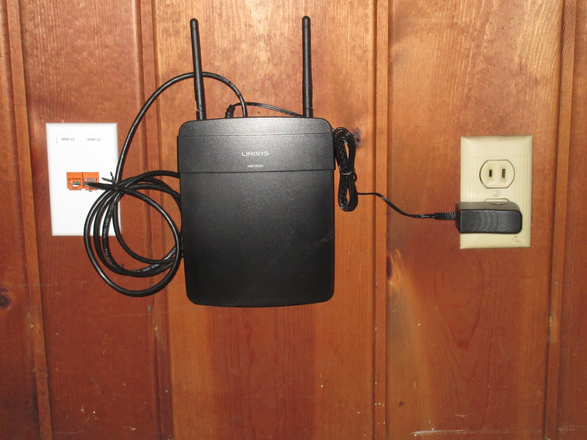

4.2. Puntos de acceso

Sunroom Network Jack & Wireless Access Point
Imagen de www.flickr.com (autor: Kurt Magoon). Recuperado de https://www.flickr.com/photos/kmagoon/21874714459. Licencia CC BY-SA 2.0 de Creative Commons
Un punto de acceso también se le conoce por su siglas AP (Access Point) o WAP (Wireless Access Point). Este tipo de dispositivos se utiliza con frecuencia para dotar flexibilidad a una red local. Por ejemplo, en un edificio es muy difícil conseguir que en cualquier rincón haya un toma de red para conectar un ordenador. Tampoco es eficiente tirar un cable con una roseta para que sea usado de forma muy esporádica. Además, los nuevos dispositivos no suelen traer un puerto RJ-45 para conectarse a una red sino que están pensados para hacerlo de forma inalámbrica. Por tanto, complementar una red cableada con puntos de acceso que doten a la red de la posibilidad de conectarse a ella de forma inalámbrica es algo casi obligatorio viendo la evolución actual de las redes y sus usuarios.
Un punto de acceso hace una función parecida a la de una pasarela. Esto quiere decir que, básicamente, conecta redes de distinta naturaleza ya que amplía una red cableada haciendo posible que computadoras puedan intercambiar información con esa red de forma inalámbrica. Lógicamente, un AP suele disponer de, al menos, un puerto RJ-45 de forma que sea posible conectarlo a la red cableada.
Dicho de otro modo, un punto de acceso es un repetidor que se encarga de enviar los datos de un ordenador hacia un elemento de red de una LAN y también hace la función contraria, la de dirigir el tráfico de la LAN hacia un ordenador concreto. Entre ese ordenador y el punto de acceso, no hay cable y el intercambio de datos se realiza de forma inalámbrica. La distancia habitual que hay entre el ordenador y el AP suele ser de decenas de metros llegando incluso hasta los 100 metros.
Un AP crea una WLAN para que los dispositivos inalámbricos se puedan conectar a ella. A un AP se le asigna una dirección IP para que sea posible realizar labores de configuración y mantenimiento. También es posible conectar varios AP entre sí, para formar redes de área local mayores. La mayoría de los AP usan los estándares IEEE 802.11.
Importante
Los conceptos principales relacionados con un AP (Access Point) son los siguientes:
- Se utilizan para dotar flexibilidad a una red local.
- Complementan una red cableada para que sea posible conectarse a ella de forma inalámbrica.
- Se puede decir que tiene la función de un repetidor ya que se encarga de enviar los datos de un ordenador hacia un elemento de red de una LAN y también hace la función contraria, la de dirigir el tráfico de la LAN hacia un ordenador concreto